**France: a limited spillover from a 200bp US rate rise**
The main impact of a 200 basis-point (2.00 percentage-point) rise in United States interest rates on France is a 0.035% drop in GDP by the 11th quarter — a limited spillover. France ranks 22nd of the countries in this run by absolute GDP response, and the model band is "minimal." The shock is a US monetary tightening, and France's own policy rate does not move at all: the local policy rate sits at 0.00 percentage points versus baseline in every quarter from Q1 to Q20. So this is a pure transmission exercise — a foreign shock working through trade, competitiveness, and financial conditions into a European economy, with no domestic policy offset.
**Demand and trade.** Household consumption falls gradually, reaching −0.017% below baseline at Q11 and still −0.004% at Q20; the path is smooth rather than abrupt, consistent with a persistent income and wealth effect rather than a sudden stop. Private investment is hit harder: it peaks at −0.099% below baseline at Q10, stays near that trough through Q11, and is still −0.023% below baseline at Q20, so the cost-of-capital channel is the deepest domestic demand response in the model. Net exports — this model does not split imports from exports, so net exports is the trade balance — improve, peaking at +0.107% of GDP above baseline at Q14 and remaining +0.098% at Q20. That positive trade contribution is what keeps the overall GDP hit small. Government spending rises modestly, peaking at +0.008% above baseline at Q11 and easing to +0.002% by Q20, a small automatic-stabiliser-like response. Government debt drifts up, peaking at +0.015% above baseline at Q19 and essentially flat at +0.015% at Q20, reflecting the small primary shortfalls and slower activity.
**External / FX.** Currency strength — the real exchange rate — appreciates steadily, peaking at +0.606% above baseline at Q16 and still +0.591% at Q20. This is the key external adjustment: a stronger real exchange rate is exactly what delivers the improvement in net exports in this model's accounting, because the trade balance moves with the relative price and competitiveness channel rather than with a separate import/export split. The two series line up: the real exchange rate appreciates through the horizon while net exports improve through the horizon, both peaking in the middle-to-late quarters. Note that the currency move is persistent — it does not fade by Q20 — which is why the trade balance also stays elevated at the end of the window.
**Labour.** Employment falls, peaking at −0.020% below baseline at Q15 and still −0.015% at Q20. Unemployment rises in parallel, peaking at +0.020 percentage points above baseline at Q14 and easing to +0.013 percentage points at Q20. Real wages rise throughout, reaching +0.104% above baseline at Q20 — the largest positive labour-market number in the set. The combination is a small labour-market contraction with real wages drifting up, which is consistent with the disinflationary pressure in the price block rather than with a wage-driven inflation story.
**Prices.** CPI inflation rises relative to baseline, peaking at +0.021 percentage points at Q8 and fading to essentially zero by Q20, with the model flagging the effect as mostly faded by Q14. Domestic inflation follows a similar but slightly smaller path, peaking at +0.015 percentage points at Q8 and also mostly faded by Q14. Firms' marginal cost falls, peaking at −0.021% below baseline at Q11 and still −0.005% at Q20. So the price block is a modest, temporary upward move in inflation measures alongside a persistent downward move in marginal cost — the inflation response is short-lived, while the cost-pressure response is longer-lived.
**Financial conditions.** The local policy rate is unchanged at 0.00 percentage points throughout, as noted. Government 2-year, 5-year, and 10-year yields are also unchanged at 0.00 percentage points in every quarter — the model does not move the French curve in response to the US shock. Bond prices fall, peaking at −0.707% below baseline at Q8 and mostly faded by Q14, still −0.026% at Q20; this is the largest single financial response in the set and reflects higher discount rates. Equity prices fall, peaking at −0.269% below baseline at Q8 and mostly faded by Q17, still −0.028% at Q20. Tobin's Q — the value of installed capital — falls, peaking at −0.069% below baseline at Q10 and still −0.016% at Q20. House prices decline slowly and persistently, peaking at −0.028% below baseline at Q18 and still −0.028% at Q20, so the housing response is late and durable. Bank credit supply contracts, peaking at −0.014% below baseline at Q17 and still −0.012% at Q20. Lending spreads widen only marginally, peaking at +0.0002 percentage points at Q16 — a very small move, consistent with the "minimal" band.
**Sectoral and capital.** Services GDP falls, peaking at −0.027% below baseline at Q11 and still −0.007% at Q20. Manufacturing GDP is hit much harder: it peaks at −0.180% below baseline at Q16 and is still −0.176% at Q20, so the manufacturing response is roughly five times the services response and does not fade within the window. The capital stock declines very slowly, peaking at −0.005% below baseline at Q20 — a tiny but persistent erosion consistent with the weak investment path.
**Timing.** The GDP hit is largest at Q11, at −0.035% below baseline. It has not faded by Q20: the Q20 value is −0.009% below baseline, so roughly three-quarters of the peak effect has unwound, but the path remains negative at the end of the horizon. The model does not flag a sign change or a "mostly faded by" quarter for GDP. The equity and bond-price responses peak earlier, at Q8, and fade sooner; the currency and manufacturing responses peak later and persist.
**Close.** These are model impulse responses to a 200 basis-point US rate rise, not forecasts. They describe how the French block of this model behaves relative to its baseline under that shock, holding the domestic policy rate and the French yield curve fixed. The headline result is a small, persistent negative GDP effect — a limited spillover — with the trade balance and the real exchange rate doing most of the offsetting work, and manufacturing bearing the brunt of the sectoral adjustment.
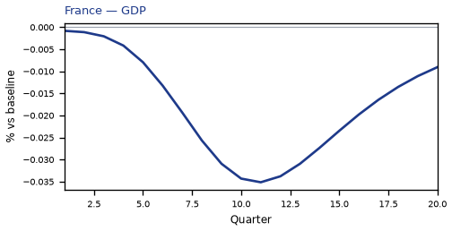
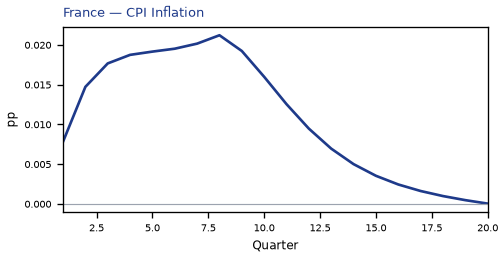
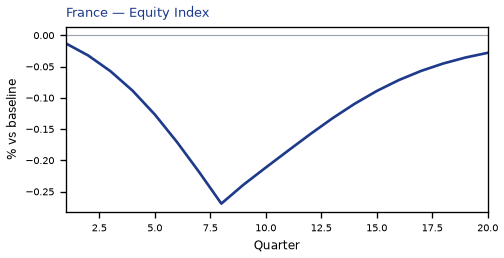
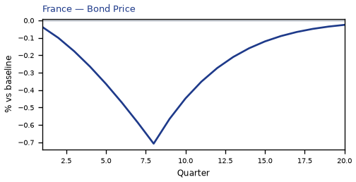
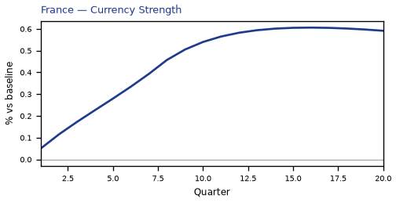
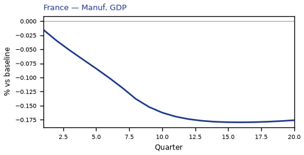
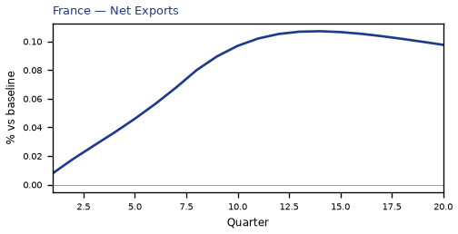
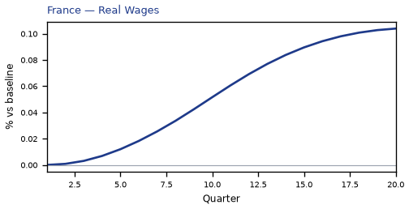
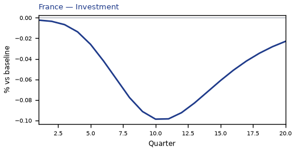
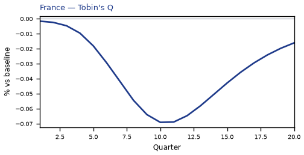
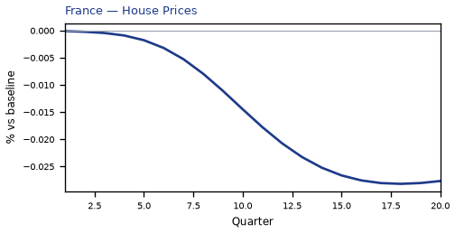
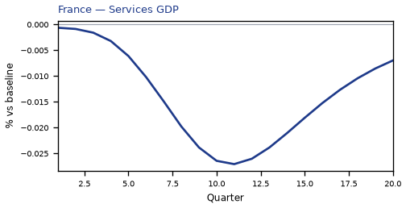
source=live · global_macro_v5 · contract v6 · Q1–Q20 JSON · not financial advice